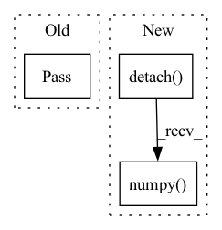

Pattern ID :31137
Before Change
def update_priorities(self, indexes, td_errors):
"""Update priorities based on the TD error"""
pass
def get_all_transitions(self, return_cpprb=False):
npsamples = self._buffer.get_all_transitions()
if return_cpprb:After Change
"td_errors must be cpu tensors"
if self.prioritized:
self._buffer.update_priorities(indexes, td_errors.detach().numpy() )
def get_all_transitions(self, return_cpprb=False):
npsamples = self._buffer.get_all_transitions()In pattern: SUPERPATTERN
Frequency: 3
Non-data size: 3
Instances Fragment ID: 91459683
Project Name: syuntoku14/pytorch-rl-il
Commit Name: 2161e618783ff3971de35d355f964684981833bf
Time: 2020-05-26
Author: syuntoku14@gmail.com
File Name: rlil/memory/replay_buffer.py
M Class Name: ExperienceReplayBuffer
N Class Name: ExperienceReplayBuffer
M Method Name: update_priorities(3)
N Method Name: update_priorities(3)
M Parent Class: BaseReplayBuffer
N Parent Class: BaseReplayBuffer
M File Name: rlil/memory/replay_buffer.py
N File Name: rlil/memory/replay_buffer.py
M Start Line: 129
M End Line: 129
N Start Line: 129
N End Line: 140
Before Change
gallery_feats = feat
else:
gallery_feats = np.concatenate((gallery_feats, feat), 0)
pass
sys.stdout.write(
"\r>> LoadGallery[{}/{}] ".format(i, gallery_len))
sys.stdout.flush()
After Change
group_inter, final, group_prob, group_label = model(torch_loader(cv2.imread(file_path)).unsqueeze(0))
feat = final / torch.norm(final, p=2, keepdim=False)
feat = feat.detach().cpu().reshape(1, 256).numpy()
if isinstance(gallery_feats, dict) is True:
gallery_feats = feat
else: Fragment ID: 91459682
Project Name: leoluopy/groupfacepytorch
Commit Name: 20388625302d7211146c80f4badced123c62fe30
Time: 2020-12-21
Author: lpy1990fff
File Name: train.py
M Class Name: AnonimousClass
N Class Name: AnonimousClass
M Method Name: load_gallery(2)
N Method Name: load_gallery(2)
M Parent Class:
N Parent Class:
M File Name: train.py
N File Name: train.py
M Start Line: 24
M End Line: 29
N Start Line: 25
N End Line: 32
Before Change
self.main_loop()
def step(self, current_state):
pass
After Change
loss.backward()
self.loss_history.append(loss.detach().cpu().item())
self.lambda_history.append(np.copy(self.current_state.detach().cpu().numpy() ))
if self.verbose > 0:
print("loss: ", loss.item())
if self.verbose > 1: Fragment ID: 91459681
Project Name: connorstoneastro/autoprof
Commit Name: 63fc675c57f587dac88f55c55ee7e3f5749ad76d
Time: 2022-11-30
Author: connorstone628@gmail.com
File Name: autoprof/fit/gradient.py
M Class Name: Grad
N Class Name: Grad
M Method Name: step(1)
N Method Name: step(2)
M Parent Class: BaseOptimizer
N Parent Class: object
M File Name: autoprof/fit/gradient.py
N File Name: autoprof/fit/gradient.py
M Start Line: 17
M End Line: 18
N Start Line: 41
N End Line: 55